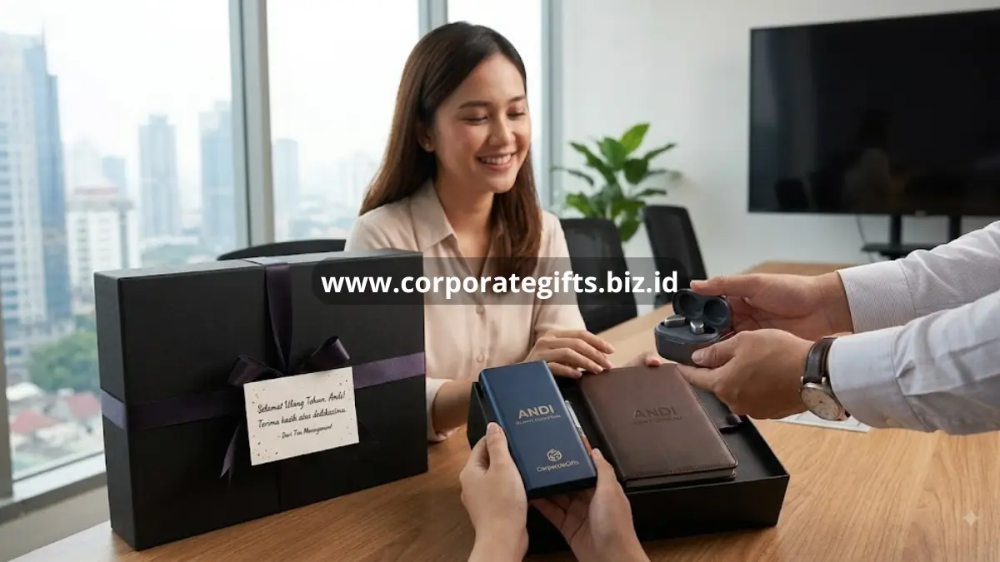

Poin Penting:
- Hadiah ulang tahun karyawan memperkuat kesan personal dari perusahaan.
- Kriteria hadiah yang tepat menggabungkan sisi fungsional dan estetika.
- Item seperti tumbler custom dan notebook kulit menjadi pilihan populer.
- CorporateGifts siap memenuhi kebutuhan hadiah ulang tahun secara rutin dan terjadwal.
Perayaan ulang tahun di lingkungan kerja kerap dianggap sepele, padahal momen ini memiliki dampak emosional yang cukup besar bagi karyawan. Berbeda dengan hadiah berbasis pencapaian kerja, hadiah ulang tahun berbicara pada level personal, sehingga pemilihan produknya perlu mempertimbangkan kesan hangat sekaligus tetap relevan dengan kebutuhan sehari-hari karyawan di kantor.
Mengapa Perayaan Ulang Tahun Karyawan Penting di Kantor?
Perayaan ulang tahun di kantor menjadi salah satu cara paling sederhana namun efektif untuk menunjukkan bahwa perusahaan memperhatikan karyawannya sebagai individu, bukan hanya sebagai sumber daya kerja.
Membuat Karyawan Merasa Dihargai Secara Personal
Ketika perusahaan mengingat dan merayakan hari lahir karyawan, muncul perasaan diperhatikan yang sulit digantikan oleh bentuk apresiasi lain. Perasaan ini secara langsung berkontribusi pada tingkat kepuasan kerja karyawan tersebut.
Menciptakan Lingkungan Kerja yang Hangat
Perayaan kecil seperti ini juga membangun suasana kantor yang lebih hangat dan akrab, karena rekan kerja lain turut merasakan momen kebersamaan saat ulang tahun salah satu anggota tim dirayakan bersama.
Apa Kriteria Kado Ulang Tahun Karyawan yang Tepat?
Tidak semua barang cocok dijadikan hadiah ulang tahun kantor. Ada beberapa kriteria yang perlu diperhatikan agar hadiah benar-benar berkesan dan tidak berakhir tidak terpakai.
Fungsional untuk Keseharian
Hadiah yang bisa digunakan dalam aktivitas kerja sehari-hari, seperti alat tulis atau drinkware, cenderung lebih dihargai dibandingkan barang dekoratif yang jarang dipakai.
Memiliki Nilai Estetika dan Personal
Selain fungsional, tampilan hadiah juga penting. Desain yang elegan dan detail personalisasi seperti nama atau inisial karyawan membuat hadiah terasa lebih spesial dan tidak generik.

Apa Saja Rekomendasi Hadiah Ulang Tahun Karyawan?
Berikut beberapa kategori produk yang secara konsisten menjadi favorit untuk hadiah ulang tahun di lingkungan kerja korporat.
Tumbler Suhu Custom yang Praktis dan Modern
Tumbler dengan fitur penjaga suhu banyak dipilih karena dapat digunakan setiap hari, baik di meja kerja maupun saat bepergian, sekaligus tampil modern dan personal.
Agenda atau Notebook Kulit Eksklusif
Notebook berbahan kulit dengan finishing rapi memberikan kesan mewah namun tetap fungsional untuk mencatat kebutuhan pekerjaan sehari-hari karyawan.
Gift Set Kopi atau Teh Premium
Gift set berisi kopi atau teh pilihan menjadi hadiah yang hangat dan personal, cocok dinikmati karyawan saat waktu istirahat maupun di rumah.
Hadiah ulang tahun karyawan yang tepat mampu memperkuat ikatan emosional antara perusahaan dan tim, asalkan dipilih dengan mempertimbangkan sisi fungsional sekaligus personal.
FAQ
1. Mengapa penting memberikan hadiah ulang tahun kepada karyawan?
Pemberian hadiah ini menunjukkan bahwa perusahaan menghargai karyawan sebagai individu, yang dapat meningkatkan kepuasan kerja dan moral tim.
2. Apa kriteria kado ulang tahun karyawan yang baik?
Hadiah yang baik sebaiknya fungsional untuk digunakan sehari-hari dan memiliki sentuhan personalisasi (seperti nama karyawan) agar terasa spesial.
3. Apa contoh rekomendasi kado ulang tahun untuk karyawan?
Tumbler custom, notebook kulit eksklusif, atau gift set kopi/teh premium adalah beberapa pilihan populer yang berkesan.
4. Apakah merayakan ulang tahun karyawan berpengaruh pada lingkungan kerja?
Ya, perayaan sederhana dapat membangun suasana kantor yang lebih hangat dan akrab antar sesama rekan kerja.
5. Bagaimana CorporateGifts membantu kebutuhan hadiah ulang tahun karyawan?
CorporateGifts dapat menyediakan pilihan hadiah custom berkualitas secara rutin dan terjadwal sesuai dengan daftar ulang tahun karyawan di perusahaan Anda.
Butuh rekomendasi cepat untuk corporate gift?
Chat tim Pusat Souvenir & Merchandise Kantor untuk kurasi pilihan sesuai budget & kebutuhan brand Anda.